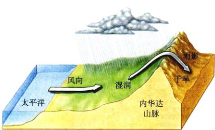
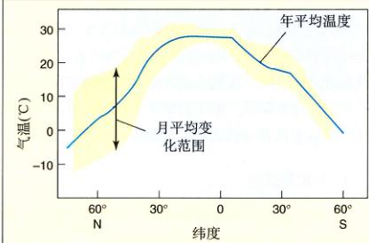
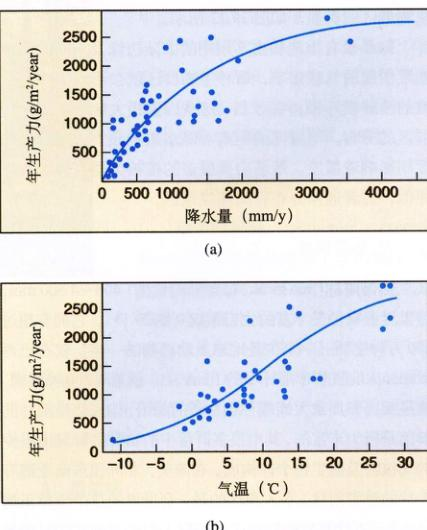
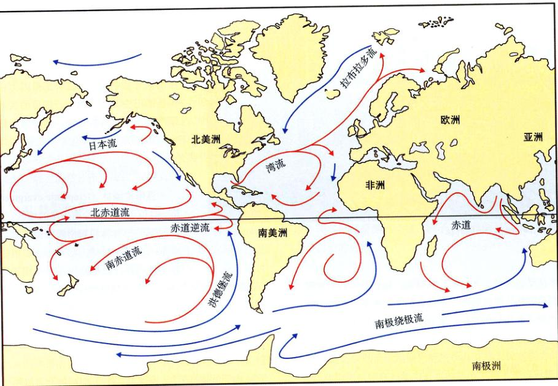
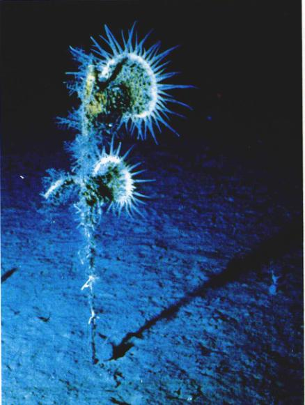
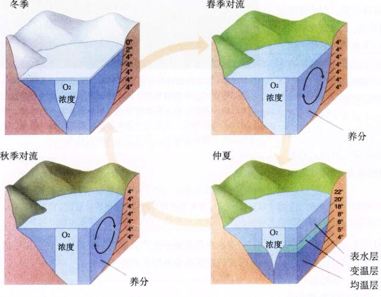

图 29.5 日地关系决定了地球上自然环境的状况和生命的分布 (a) 照在地球中纬度地区的一束阳光比照在赤道附近的一束类似的阳光所覆盖的面积更大。(b) 地球公转对气候影响显著。由于绕太阳运转时地轴稍有倾斜，南北半球的气温每年循环变化。

图 29.6 大气环流的主要形式 (a) 大气的循环流动模式。(b) 地球表面主要的气流。
图 29.1 生物圈 在这张卫星图片中，橙色代表严重干旱的地区。地球上几乎所有的环境都能用温度和水分加以描述。这些物理参数与栖息在特定区域的生命有着密不可分的联系。
生物圈包括地球上所有的生物群落，从热带雨林中丰富的生命到海洋中的光合浮游植物。一般来说，生命的分布体现了地球环境（主要是温度和水分）的变化。图 29.1 是一张历时8年拍摄的美洲卫星图片。图中的颜色标明了叶绿素——生物群落繁荣程度的指示剂——的相对丰富程度。海洋中及沿海岸线的深红色区域代表浮游植物和海藻，陆地上绿色和深绿色的区域是密林，而像南美洲西部沙漠地区的橙色区域则是生命贫瘠的地区。
大范围内自然环境的特点决定了一个地区内生存的物种。其中的关键因子包括：
遭遇环境变化的个体将选择保持一个稳定的内部状态，这样的措施叫做保持稳态 (homeostasis)。许多动植物主动采取生理的、形态的或行为的机制来保持稳态。图 29.2 中的甲虫正用一种行为手段适应水分的剧烈变化。另一些动植物则仅仅同环境保持简单一致，它们的身体同周围的温度、盐度及其他环境要素完全相同。
对环境的反应可以是短期的，也可以是长期的。短期来说，个体在短短一生中可以采用多种方法以适应环境变化；长期来看，自然选择将挑选出最能适应环境的种群。
图 29.2 迎接沙漠中的挑战 在非洲西南部的纳米博沙漠 (Namib Desert) 的干燥沙丘中，甲虫 Onymacris unguicularis 站在沙丘顶部将它的腹部抬起，以便从雾气中凝结收集水分。
(1) 生理适应：许多生物能通过生理调节以适应环境的变化。因此，人的面部血管在冷天收缩以减少热量的散失（同时表现为“脸红”）。类似地，在高海拔地带，像安第斯 (Andes) 这样的地方，新来的外地人会产生高原反应，症状表现为心跳加快、恶心、疲劳、头痛、头晕，在一些严重情况下，还会出现肺气肿，这是低气压和空气低氧含量的结果。几天过后，就会感觉好一些，因为一系列生理变化使得体内输氧能力提高了（表 29.1）。
在冬天，一些昆虫通过往血液中添加甘油来抗冻，另一些则将糖原转化成酒精来保护它们的细胞膜不受寒冻侵袭。
| 增加呼吸频率。 |
| 加快红细胞生产，使血液中血红蛋白增加。 |
| 血红蛋白氧结合能力的下降，使身体组织释氧速率提高。 |
| 线粒体、毛细血管和肌肉中肌红蛋白密度的增加。 |
(2) 形态适应：恒温动物在寒冷的环境中采取尽量减少能量支出的措施。许多哺乳动物在冬天长出厚厚的皮毛，利用它们的皮毛隔寒冷以保持热量。一般来说，皮毛越厚，隔冷作用越好（图 29.3）。因此冬天的狼的皮毛是夏天的三倍厚，隔冷效果是夏天的两倍多。另一些哺乳动物则在最冷的季节里采取冬眠的方式来避免消耗保持恒定体温所需的能量——就像变温动物一样。
(3) 行为适应：许多动物采取从一个栖息地迁徙到另一个栖息地的方式适应环境的变化，离开那些不适合的地方。图 29.4 中的热带蜥蜴为了保持体温而在开阔的太阳地取暖，当它们觉得过热的时候，就会躲到阴凉处。相反，生活在林荫地里的同种蜥蜴不能通过这样的行为来调节体温。所以，它们调节自己的体温以同周围保持一致。
行为适应有时十分极端。生活在北美沙漠中的具有铲形足的蟾蜍 (Scaphiopus sp) 能在地表打出近1米深的洞穴，以逃避地表的酷热和干燥。这些洞穴的湿度大减缓，只要脂肪贮备维持生。当湿冷季节来到时，它们重新出现，进行繁殖。幼蛙很快成熟并重新掘穴，返回到地下。
以上例子包含了为了适应不断变化着的环境而作出调整的各种方式。个体改变自身的生理、形态、行为状态的能力是一种进化适应，是自然选择的结果。这个结果……
（接上页）……过减少皮肤的失水解决了这个问题。某种青蛙具有特殊的腺体，能够分泌一种蜡状物覆盖全身皮肤，其防水能力可令水分散失减少 95%。
对不同环境的适应也可以用实验来研究。例如，当大肠杆菌的菌株在高温 (42°C) 下生长时，利用资源的速率逐渐增快；2000 代之后，这种速度已比实验初始加快了 30%。这种资源消耗速度加快的原因仍然不为人知，也因此成为了研究的焦点。
图 29.3 形态适应 北美哺乳动物的皮毛厚度与其绝热性能有着密切的关系。
图 29.4 行为适应 蜥蜴 (Anolis cristatellus) 外出晒太阳以保持相对稳定的体温。在荫蔽的森林，由于不能采取相同的办法，它的体温随周围的环境而变化。
果也可以通过比较不同环境中的两个相似物种而得到。在这种情况下，物种常常表现出对它们所处特殊环境惊人的适应能力。
举例来说，生活在不同气候下的动物表现大不相同。寒冷地区的哺乳动物往往耳翼小 (Allen 定律) 而体型大 (Bergmann 定律) 以减少热量散失。这两个特点都缩小了容易损失热量的体表面积。生活在不同温度下的蜥蜴表现出生理上的适应。沙漠蜥蜴不会忍受足以使北欧蜥蜴致命的高温的影响，而北欧蜥蜴则在沙漠蜥蜴完全不能行动的寒冷环境中奔跑、捕食和消化食物。
许多物种还能在缺水的环境中生存。众所周知，骆驼和其他一些沙漠动物能够走很长的路而不饮水。另一个适应沙漠环境的例子来自于蛙类。大多数青蛙能让水自由由透过湿润的皮肤，这样的动物不能在干旱气候下生存，因为它们会迅速丢失水分。但是有些蛙类已经通过减少皮肤的失水解决了这个问题。
生态系统的分布（见本章后面的章节）不仅受地球自身特点的影响，如不同土壤类型及山谷分布，还受两个关键物理因素的支配：①地球上不同地区所接受的太阳热量及由此引起的季节变化；②地球大气环流及随之而起的大洋环流。所有这些因素决定了当地的气候，也决定了群落的分布。
地球接受了大量的太阳短波辐射，也以长波辐射的形式向太空返还等量能量，每年有 4.18 × 10²⁴ J (10²⁴ cal) 的能量到达地球大气上层表面，即每分钟每平方米 8.11 J (1.94 cal)。这些能量有一半能到达地球表面。这个波长不同于到达外层大气的辐射的波长。大部分紫外辐射被大气中的氧气 (O₂) 和臭氧 (O₃) 吸收。我们在第30章将会看到，由于人类的活动，臭氧层的消耗造成了严重的生态问题。
全世界有丰富的生态系统，因为不同地区的气候大相径庭。在同一天中，迈阿密、佛罗里达和缅因州的天气往往差别很大。这并不神秘，由于地球是个球体，某些地区比其他地区接受更多的太阳能量。这种差别导致了地球表面气候的不同，也间接地影响到生态系统的多样性。热带比温带温暖是因为阳光在赤道地区几乎是垂直入射，而在极地附近，太阳光的入射角倾斜，使得光线照射在广阔得多的区域上，从而减少了单位面积上的能量（图 29.5a）。
地球公转及自转对世界气候的形成都有重要影响（图 29.5b）。由于公转及 23.5° 的黄赤交角，从赤道向极地的不同地区都会出现四季交替。除了春分与秋分以外，一年中两个极地的一个总会更接近太阳。
图 29.5 日地关系决定了地球上自然环境的状况和生命的分布 (a) 照在地球中纬度地区的一束阳光比照在赤道附近的一束类似的阳光所覆盖的面积更大。(b) 地球公转对气候影响显著。由于绕太阳运转时地轴稍有倾斜，南北半球的气温每年循环变化。
图 29.6 大气环流的主要形式 (a) 大气的循环流动模式。(b) 地球表面主要的气流。
当空气变温暖时，它的水汽容量就会增大，反之则减小。赤道附近的高温促进了蒸发作用，空气也因此变得温暖潮湿。当空气上升并向两极流动的时候，它逐渐冷却，湿度也慢慢降低（图 29.6）。结果，地球上大部分降水出现在赤道附近。
这片气流上升的区域气压低，称作赤道无风带 (doldrum)，赤道南北的空气都流向这里。当上升气流到达南北纬 30° 附近，下降的干冷空气再次被加热，它的蒸汽容量增加，形成了一个降水稀疏区域。这时的空气，由于仍暖于极地空气，所以继续向极地流动。在南北纬 60° 附近再次上升，形成一个降水充沛的地带，在这里还有一个低压带——极锋 (polar front)。上升气流的一部分返回赤道，另一部分继续向北或北上，在极地处沉降，形成一个降水稀少的地带，最后返回赤道。
同这些南北向循环的气流带相比，还有三股受地球自转和热量分布影响所产生的主要气流。在南北纬 30° 之间有信风，南半球是东-东南走向，北半球是东-东北走向。信风常年不息，是最稳定的风，冬强而夏弱。在南北纬 30° 至 60° 之间，西风由西向东吹过。这里尤其是大陆西缘的气候主要由它决定。靠近极地的地方，还有由东向西的弱风。
图 29.7 雨影效应 太平洋富含水汽的风受到内华达 (Sierra Nevada) 山脉的阻挡而降温。水汽容量的下降产生了降水，这使得该山脉的中海拔地区成为世界上最多雪的区域之一。这里有高大的树木，包括举世闻名的美洲杉。当空气在山脉东侧下降时，它的水汽容量再次增加，从周围吸收了比前面损失还多的水分。结果，山区东侧形成了沙漠。
图 29.8 气温随纬度的变化 蓝色曲线代表从北极到南极各个纬度的年平均温度。
如前所述，在南北纬 30° 附近，空气下沉变暖，降水稀少；南北纬 60° 附近，空气上升变冷，降水充沛。这是世界上所有的大沙漠都在南北纬 30° 附近的原因之一。另一些大沙漠在内陆，那里降水量有限是因为离湿润空气的最终来源——海洋太远。
还有一些沙漠是因山脉阻挡了海上吹来的富含水汽的风形成的。在这种情形下，空气沿著山脉上升，水汽容量减少，从而在山的迎风坡——风吹来的一面——形成降水。例如，加州的内华达山 (Sierra Nevada) 东面就比西面干燥得多，植被也大不相同。这种现象称为雨影效应 (rain shadow effect)（图 29.7）。
世界上有四个坐落在不同大陆的面积不大的区域，它们的气候与地中海地区十分相似。巴扎、加利福尼亚、俄勒冈的一部分、智利中部、澳大利亚西南部和南非最南部地区都有所谓的地中海式气候。这些地区每年夏天都有西风从凉爽的海洋吹向温暖的大陆。因此，空气的水汽容量增加，吸纳了水汽，形成干旱的气候。这种气候在世界范围内并不多见。在这五处地方，有许多进化独特的动植物。由于西风的缘故，世界上最大的沙漠（非内陆地区）和地中海气候区多在大陆西岸。
图 29.9 海拔与纬度一样影响生态系统的分布 通常，热带的高海拔地区会存在与高纬度的低海拔地区类似的生态系统。因此，在墨西哥南部或危地马拉的高山上，可以看到如图所示的生态系统分布。
另一种区域性气候出现在南亚。夏季，印度和南亚出现季风性气候。冬天，信风由东吹向东北，从凉爽的陆地吹向温暖的海洋。从6月到10月，当地地温度升高，空气流动便会反向，风从西南海洋吹向南亚次大陆及邻近地区，带来降水。每年的季风强度和持续时间决定了这个地区数以百万的人的生活状况。
热带生态系统的温度往往较高，原因很简单：热带所处的纬度使得其单位面积可接受更多的阳光。当太阳处在头顶正上方的时候辐射最强；只有在阳光垂直照射的热赤道热带地区才会出现这种情形（见图 29.5）。远离赤道，最高气温出现在赤道附近（即 0 纬度）。由于没有四季交替，热带生态系统的月平均温度变化很小。当由赤道向低纬度的温带地区移动，阳光以倾斜的角度照射，单位面积上的强度减少了，所以平均温度要低于热带地区。在这里，温度变化变得显著，因为四季交替开始逐渐明显。
大气循环的季节变化引起洋流的相应变化，有时使得含养料丰富的寒流由海底上升至海面，使得海洋浮游生物及其他生物大量繁殖。淡水湖泊池塘中也有类似的季节性水流变化，每年的春秋两季将营养物质从水底带到水面上。
温度与海拔也有关系，海拔越高，温度越低。在同一纬度，海拔每升高 1000 m，气温就下降约 6°C。由于海拔带来的温度变化对生态系统的影响同纬度一样（图 29.9），因此，北美海拔升高 1000 m 带来的温度降低等同于纬度增加 880 km 带来的效果。这也是远离赤道，树木生长线（树木生长的最高海拔）越低的原因之一。
生态系统内部气候的变化范围也非常大。堆满落叶废弃物的森林地表，就存在许多荫蔽程度、温度、土壤水分蒸发速度等生态因子不同的微气候 (microclimate) 区。这些局部的气候条件可以与整个大气迥然不同。园丁们习惯在新插播的草坪上撒上麦杆，就是为了创造一个保温的微气候。
生物群区 (biome) 是指具有一定显著特征并分布在主要由气候的区域单位上的大块陆地地区区域的生物群落。从广义的定义可以料想，划分生物群区的方法多种多样，不同的生态学家可能会将一群落归到不同的生物群区中。对主要生物群落的生物群区的实质目前还存在一些争议，只能尽量全面地描述它。
本书列出了八个主要的生物群区单元：热带雨林、热带稀树草原、沙漠、温带草原、温带落叶阔叶林、温带常绿林、寒带针叶林和极地苔原，这些遍布全球的生物群区占据了按照降雨量划分的大多数地区。
一些生态学家将下列6种生物群区认为是8个主要生物群区的延伸：极地冰川、山地、常绿阔叶灌丛、暖湿常绿林（亚热带常绿林）、热带季风林和半沙漠。由于地区气候各异，而这些生物群区具有明显的区域特征，所以不同地区的这6种生物群区大不相同。
14 种生物群区的分布已在图 29.10 中标识出来。虽然每种生物群区习惯上以其中占优势地位的植被命名（落叶林、常绿林、草地等），每种生物群区也有其标志性的动物、真菌和微生物。全世界的极地苔原都生存着狼、驯鹿、北极熊、野兔、猞猁、雪鹗、鹿蝇和蚊子，它们构成了极地苔原生物群区的典型特征。
图 29.10 生物群区的分布 无论位于哪里，每种生物群区的结构和外观都是相似的。
生物群区的分布受到许多环境因子的影响，最重要的两项是水分和温度。图 29.11 表明了年降水量和年均气温与生态系统生产力的关系：生态系统的生产力很大程度上受两者影响。这并非说土壤结构和矿物质组成（见第39章）或与常年气候相对的季节性气候等这些因素不重要，具有相同降水量和温度的地方也会呈现不同的生物群区。但是这两神多变的的因子决定了大范围地区内生物群区的类型，如图 29.12 所示。
如果没有山地和由不规则的大陆边缘及不同的海洋温度引起的气候影响，每种生物群区就会形成同纬度一致的全球横坏带。地形极大影响了生物群区的分布。与海洋的距离对降水影响颇大，而海拔高度则影响着温度。落基山顶覆盖的植被类型与极地苔原相似，后者通常分布在高纬度地区。
图 29.11 降水和气温对初级生产力的影响 全球 52 个地方生态系统的净初级生产力极大依赖于 (a) 年平均降水量和 (b) 年平均气温。
图 29.12 温度和降水决定了生物群区的分布 当年平均降水量在 50~150cm 之间时，季节性干旱，火灾和放牧等其他因素对生物群区的分布也有重要影响。
热带雨林 (rain forest) 每年降雨量为 1400 ~ 4500 mm，是世界上物种最丰富的生态系统（图 29.13）。它拥有超过 200 万种生物——至少是地球上动植物的一半！仅在巴西 Rordonia 地区热带雨林中的 1 km² 中，就有 1200 种蝴蝶，这是美国和加拿大蝴蝶种类总和的两倍。构成热带雨林的群落是极为丰富的，其中很多群落中的物种种类只由很少的动植物及微生物个体构成。在南美、非洲和东南亚都有大片的热带雨林。令人担忧的是，全世界的热带雨林正遭到破坏，不计其数的物种还未等到人们去发现它们的时候便灭亡了。在大部分人的有生之年，世界上将有 1/4 的物种随着热带雨林一起消失。
处于干旱气候下的热带边界地区分布有世界最大热带稀树草原 (savannas)。热带稀树草原视野开阔，树木稀少，降雨（每年 750 ~ 1250 mm）是季节性的，其中许多动植物只有到了雨季才活跃起来。生活在非洲草原上的大群食草动物是我们每个人都十分熟悉的。在更新世，这些动物生活在北美洲，现在却主要存活于非洲。从全球来看，热带稀树草原是热带雨林到沙漠的过渡。如今越来越多的亚热带草原被开垦为耕地以养活指数增长的人口，其中的动物们也挣扎在死亡的边缘。大象和犀牛现在已经是濒危动物，狮子、长颈鹿和猎豹不久也会步它们的后尘。
内陆地区大多是世界性的大沙漠，尤其是非洲（撒哈拉沙漠）、亚洲（大戈壁滩）和澳大利亚（大沙沙漠）。沙漠 (desert) 是年降雨量不足 250 mm 的干旱地区，降水量如此之少以至于地面只能生长具有强大保水能力的植被。动物和植物在一年中有的季节不得不谨慎行事。为了避免高温灼伤，大多数沙漠脊椎动物蜷居在很深的、凉爽的（有时甚至有些潮湿）洞穴中。那些一年中大部分时间都活跃的生物，也只敢在温度下降很多的夜间出活动。另外一些动物，如骆驼，能在有水的时候喝下大量的水，接着度过一个漫长的干旱季节。沙漠中许多动物采取迁徙的方法，季节性地去往它们能找到足够食物的地方。
图 29.13 热带雨林
图 29.14 温带落叶阔叶林
位于赤道和极地之间是生长着茂密草原的温带草原 (temperate grassland) 区。这些草原曾经覆盖了的大片的北美洲内陆、欧亚大陆及南美洲地区，它们如果作农田的话，常常有很好的收成。现在美国及加拿大部分的许多肥沃的农业用地最初便是北美草原 (prairies)。它的特点是多年生草本植物的根深入土中，土壤也常常深厚而肥沃。成群的食草动物寄居其上是温带草原的另一特点，在北美，成群的野牛和叉角羚一度在草原上繁盛。但现在，随着大部分草原被开垦为地球上最肥沃的农耕区，这些兽群几乎已经销声匿迹了。
温和的气候（温暖的冬天和凉爽的夏天）和充沛的雨水为欧亚大陆、美国东北部和加拿大东部的落叶阔叶林 (deciduous forest)（图 29.14）提供了有利的生长条件。落叶林即是在冬季脱落树叶的树林，鹿、熊、海狸和浣熊都是这些地区常见的动物。几百万年以前，这种森林贯穿北美与欧亚大陆，如今的温带落叶林就是以前森林的残迹，所以东亚与北美东部的落叶林拥有许多相同的物种，目前短吻鳄只存在于中国和美国东南部便是例证。东亚地区的落叶林物种丰富，那是因在漫长的历史演化过程中，那里的气候条件保持了相对的稳定。落叶阔叶林中生长着众多的多年生草本植物。
温带常绿林 (temperate evergreen forest) 位于冬季寒冷而干燥的地区。美国西部的松树林和加州的橡树林就是典型的温带常绿林，它是贫瘠土壤的标志性植被。温带针阔混交林代表了南部温带阔叶林和北部亚寒带针叶林间的广大过渡地带。这些森林由于滥砍乱伐已经陷入了危机中，尤其是美国的西北部森林。
由针叶树（云杉、铁杉和冷杉）组成的北方森林横跨亚洲和北美的广阔地带，形成一个环带。针叶树有着针一般的尖叶，四季常青。这种生态系统叫做泰加林 (taiga)，分布在寒冷地区，是地球上最大的生态系统之一。在这里，冬季漫长而寒冷，大部分有限的降水集中在夏季。泰加林区提供给农作物生长的时间太短，因此几乎没人居住于此；只有许多大型哺乳动物，包括麋鹿、驼鹿、马鹿，及一些食肉动物如狼、熊、猞猁和貂才居住在亚寒带针叶林中。这里传统的产业主要是狩猎和伐木。在这里，常常可以看到沼泽、湖泊和池塘，周围密密麻麻地长满了柳树或桦木。每一片亚寒带针叶林都由一种或少数几种树木的高密度种群组成。
在大针叶林南部和极地冻土的北面，只有很少的树木生长。这里的草甸被称为极地苔原 (tundra)，它开阔、多沼泽，且寒风凛冽。由于数量巨大，这种生态系统覆盖了地球陆地表面的五分之一。极地苔原的降水稀少，每年夏季极地短哲地降雨，雨水落在冻土上，便形成了一片沼泽。极地苔原表层的永久冻土 (permafrost) 常常厚达一米，上面树木矮小，且多数生长在溪流和湖泊的附近。与泰加林一样，极地苔原上的群常年居住在一处，每到短暂的夏季便迅速繁殖。大型的食草动物，如麝牛、驯鹿，还有食肉动物，如狼、狐和猞猁，都生活在极地苔原上。旅鼠种群的升降，周期通常较长，对于其捕食动物的数量具有重要影响。
大洋环流 (ocean circulation) 的模式主要由大气环流的方式决定，但同时也受大陆位置和形状的影响。主要的大洋环流是大型的回漩（图 29.15）。在南高压的亚热带地区和南北纬 30° 附近反复运动。在北半球，回漩是顺时针的，南半球则是逆时针。大洋环流能够重新分配热量，从而影响到海洋本身以及陆地上的生命。例如，北大西洋的墨西哥湾暖流从北美靠近北卡罗来纳州的 Cape Hatteras 出发，到达欧洲的南大不列颠群岛。由于它的影响，西欧比同纬度的北美温暖得多。一般来说，北半球温带大陆的西部比东部温暖，南半球则相反。另外，风从低温的海洋吹向温暖陆地时水汽容量增加，从而减少了降水。
在南美洲，洪堡寒流将富含磷的冷水沿大陆西岸北送；由安第斯山脉吹向海洋的风引起下层冰冷海水的上涌，使得原本位于海底的微粒随之来到浅海。这营养丰富的大洋环流使得海洋生物大量繁殖，造就了秘鲁和智利北部繁荣的捕鱼业；而在这些国家的海岸线上，海鸟洋生物为食的鸟类则留下了许多宝贵的富含磷的鸟粪淀。
图 29.15 大洋环流 海水全年循环不息，它们极大地影响了周围陆地上的气候。
图 29.16 一个厄尔尼诺冬天 由于西太平洋的暖流东移，厄尔尼诺洋流致使全球天气异常。
受大陆位置的影响，全世界的海洋形成了巨大的环流。海水的环流带来了热量的再分配，使大陆西侧的温度升高。像厄尔尼诺这样的洋流干扰对世界气候有着深远的影响。
地球表面约 3/4 为海洋所覆盖。海洋的平均深度略深于 3 km，其中大部分寒冷而黑暗。异养生物甚至可以生活在像西太平洋马里亚纳海沟这样深达 11 km 的海底。光合生物则只能在几百米的海洋浅层生活。浅层以下的生物几乎都是间接地获得食物，这些也都是上层光合作用的结果。
海水中的氧气往往数量有限。随着海水温度升高，氧含量逐渐减少，因此，可供使用的氧就成为限制温暖海域生物繁殖的一个重要因素。相反，海洋中的二氧化碳则完全不受限制。另外，海洋中矿物的分布比陆地更具有一致性，陆地上土壤特性取决于土壤风化前的母岩。
寒冷而裸露的海底长久以来被视为生命的贫瘠之地。然而，近几年来海洋生物学家近距离的观察，却描绘出一幅截然不同的景象（图 29.17）：海底拥有丰富的生命。无论是在大西洋还是太平洋，在那深达数英里、漆黑一片并且压力高得出奇的海底，科学家发现了成群的深海无脊椎动物。粗略估计它们有数百万数之多，其中许多具有鲜明的地域性。深海的物种之多甚至可以与热带雨林媲美！这是人们始料不及的。新物种的分化出现往往需要某些环境“障碍”（见第22章），然而海底似乎长久以来都出自平静。深海生物存在少数迁移现象，这种现象可能导致物种的分化，进而促使物种区域化和新物种的形成。零星分布的栖息地可能促进新物种的形成。深海生态学家已经在深海中找到了存在资源差异的证据。
另一种推测是，与陆地相比，海洋中的生命已经经历了漫长的数十亿年的进化历程，这也很可能是产生海洋中复杂生物多样性的原因。
有众多的小型无脊椎动物在海底被发现，海洋中的生物量如此巨大，物种数已超过了已记录的生活在陆地的物种的 90%。虽然每个生物的门类，包括昆虫、蜱螨、线虫、真菌和植物都有海洋代表种，但它们只占总数的一很小一部分。这主要有两个原因。首先，陆地栖息地的环境差异较为明显，海拔、岩层、暴露程度和其他一些生态因子的多样性决定了陆地上数百万种生物的进化。其次，很少有分类学家主动将从海底带到海面的大量底栖海洋生物进行分类。
海洋中不仅物种丰富，而且门类齐全。几乎所有的门都起源于海洋，并且都有海洋代表物种。只有很少几个门生物成功地在陆地或淡水中存活，但在被记载的种类中，这些却占了大多数。
图 29.17 食物从上层落至海底 这两只海葵（实际上是动物）用透明的海绵状触手捕捉“深海雪花”——从距离海底数英里的海面上飘落下来的食物颗粒。
海洋环境由三个主要部分组成：①浅海区 (neritic zone)，即海岸沿岸的浅水区域；②浮游区 (pelagic zone)，即真正的海洋的水域；③海底区 (benthic zone)，即真正光线不能达到的海底深处区域（图 29.18）。光线不能达到的海底深处叫微光深渊区 (abyssal zone)。
图 29.18 海洋生态系统 生态学家根据深度（阳光透射度）和距海岸距离将海洋生物群落划分为浅海区、浮游区、深海区和海底区。
图 29.19 浅海区的物种丰富多样 在温带的沿海水域中，鱼类和其他许多动物在褐藻丛中栖息和觅食。
海洋的浅海区是大陆和岛屿沿岸水面至水下 300 m 之间的区域。它虽然不大，但却拥有数量众多的物种（图 29.19）。在这个区域中，海洋与陆地发生激烈的相互作用，只有那些能够忍受连续不断的海浪冲击而不能被冲走的生物才能得以生存。潮间带 (intertidal region) 是浅海区的一部分，也称作海岸带 (littoral region)，当潮水退去时便完全暴露在空气中。
世界上著名的渔场都位于大陆架的浅水区，有的靠近大陆，有的则在开放海域。这些地方的海洋表层滋育着巨大的渔业资源。浅海带及其他浅水区，由于上升洋流的关系，从陆地携带来的养料要比远海丰富得多，这就为我们带来了丰富的大陆架渔业资源。如何保护和合理利用这些资源——这个世界高质蛋白质的宝库——正受到越来越多的关注。在 Chesapeake 湾，几条穿越人口密集区域的河流流入海，那里的环境压力不仅影响到正常的渔业生产，甚至影响到了人们的生活质量。从农场而来的越来越多的生活和生产污水给水带去了过剩的营养，这些逐渐增多的营养使得某些海洋生物大量繁殖。它们消耗越来越多的氧气，从而影响了像牡蛎这样其他一些生物种群的发展。气候的变化可能使这些影响放大，最终结果是大量的海洋动物在很短的时间内悄无声息地绝迹。
世界海洋面积约 3/4 位于热带。这些地区水温常年保持在 21°C 左右，适宜珊瑚礁生长。即使是在那些相对贫瘠的热带水域中，这种高效的生态系统也能很好地集结营养。
在浮游区的上层水域中，漂浮着各种各样的被称作浮游生物 (plankton) 的微生物，它们作为主要成员组成了丰富的生态群落。自由游动的鱼类和其他大型水生生物以浮游生物和群落内其他成员为食。有些浮游生物，包括浮游植物和一些细菌，能够进行光合作用，它们的贡献约占全球光合作用的 40%。大多数浮游生物栖息在离海面不超过 100 m 的区域内，在这里阳光畅通无阻。其中估计近一半的光合作用都由直径不超过 10 μm 的生物进行——包括蓝藻和其他微藻；但是这些微生物的数量和生态重要性却一直未能得到足够的重视。
浮游生态系统中的许多异养浮游动物直接以光合生物或同级生物为食。凝胶状的动物，特别是水母和栉水母，在浮游生态系统中数量相当丰富。地球上最大的动物——蓝鲸，就是以浮游生物为食。当然，它也吃其他许多生物，如鱼类和甲壳动物。
浮游生物的增长十分迅速，但是浮游生态系统的生产力并不高，这是由于海洋中营养物质的循环异常迅速。海水中的氮和磷含量很少，因此生物数量受营养缺乏之态。所以浮游生物的迅速增长并不反映养分的充裕，而是反映了养分被快速利用和循环。
图 29.20 海底和深海区的生命 (a) 这种深海鱼类眼下方的发光点是由共生的发光细菌所导致的。类似的发光信号是生长于深海的动物的共同特征。(b) 这些大型带刺蠕虫生活在海底火山口附近。从那里喷出的水温度高达 350°C，随之，再被周围的海水冷却到 2°C。
图 29.21 一条营养充足的溪流 (a) 岸边的群落将大量有机物渗入溪流中，这大大提高了小溪的生产力。(b) 这种斑纹蝾螈和 (c) 这种将卵放在背上的巨型水虫只能在淡水生境中存活。
距海面 1000 m 以下的深海区，其面积是地球陆地面积总和的两倍。海底区是一层厚厚的泥，由千百万年海水携带的微粒沉积而成。由于压力大（每 10 m 增加一个大气压）、温度低 (2~3°C)、无光照和食物匮乏，生物学家认为这里没有生命存在。实际上，最近的研究表明深海中仍有着惊人的物种存在。虽然也有大型动物，但这里大多数成员只有几毫米长。一些大型生物可以发出生物光（图 29.20a），以此来相互沟通和吸引猎物。
海底动物只能靠生活在它们上方数千米处的生物吃剩的少量食物过活。海底动物密度低并且体形小，这某种程度上就是食物缺乏的结果。1977 年，海洋学家们乘一艘深海潜艇潜入海底，他们惊奇地发现，在 2500 m 深的地方有大群靠地热能生活的大型动物。熔融物从地壳喷发出来形成多孔的岩石，这里的海水反复流动循环，形成一个生命力旺盛的深海绿洲。玄武岩从大洋中部的海脊喷发而出，形成一系列这样的区域。
这里的海水被加热到 350°C 以上。在过程中，大量海水被分解。分解的产物，如硫化氢，为细菌提供了能量，使它们能通过化学合成进行生产，代替光合作用。类似贻贝、蛤和大型红羽状蠕虫的动物生活在火山口周围，它们不同于任何一门已知的在浅水中生活的无脊椎动物（图 29.20b）。细菌就寄生在这些动物的组织内。这些动物为细菌提供一个将二氧化碳、硫化氢和氧转化的场所，细菌则为它们提供有机物。多毛纲环节动物（见第46章）、海葵都倚靠这些自由的化能细菌为生。蟹类和一些鱼类扮演清洁道夫和捕食者的角色。这是地球上为数不多的不需要阳光的生态系统之一。
淡水生态系统与海洋和陆地的生态系统不同，它的区域十分有限。陆地上的湖泊只占陆地总面积的约 1.8%，流动的流域（溪流和河流）只占约 0.3%。所有的淡水系统都与周边的陆地生态系统有着紧密的联系，特别是湿地和沼泽。另外，大量的有机物和无机物源源不断地从周围的陆地进入淡水（图 29.21a）。许多生物被限制在淡水中（图 29.21b）。如果生活在小溪或河流中，生物就必须学会再湍急的水流中避免被冲走。
图 29.22 湖泊和池塘中的三个区域 湖泊边缘一周浅水区（沿岸区）生活着藻类和以它们为食的昆虫。横跨整个湖面的开放水域（浅水区）居住着浮游藻类、异养浮游生物和鱼类。漆黑的深水区覆盖了整个湖床，其中含有大量的以尸体残骸为食的细菌和蠕虫状生物。
小范围的淡水叫傲做池塘，大一些的叫做湖泊。由于水会吸收部分波长的阳光（每米吸收红光的 40% 和蓝光的 2%），而这部分波长是光合作用所必需的，所以光合生物的分布仅限于上层的透光区 (photic zone)，异养生物则生活在下层非透光区 (aphotic zone)。
与海洋一样，池塘和湖泊根据水域的深度和离岸的距离分为3个区域（图 29.22）。沿岸区是靠近岸边的浅水区域。浅水区是离岸较远的水面，这里光照充足，生活着浮游生物和其他自由生活的生物。深水区则是阳光难以到达的水底区域。
热分层是温带地区大型湖泊特有的现象（图 29.23）。在夏天，上层的温暖湖水形成表水层 (epilimnion)，它的下方是较冷的（约 4°C）均温层 (hypolimnion)。这两个水层之间存在一个温度突变的水层。根据地区气候特性的不同，表水层在夏天甚至可以深达 20 m。
秋天，表水层温度下降，接近均温层的温度—— 4°C，此时它们合二为一，这一过程称为秋季对流。因为水在 4°C 时密度最大，当进入冬季温度进一步下降时，低密度的冷水上升，在湖表面形成冰层；而此时冰下的水温仍保持在 0~4°C 之间，从而保证了动植物的生存。
春天，冰层融化，表层的水开始升温。当它达到 4°C 时，两个水层又合为一体，这个过程称为春季对流。每当上下两层湖水在春秋两季混合的时候，原本沉积在湖底的养料便随着对流到达湖面，而表层湖水中的氧气也会被送至湖水深处。
图 29.23 淡水中的热量分层 温带的大型湖泊或池塘具有热量分层的特征，在春秋两季会发生对流。图中的三层湖水中，均温层水温在 4°C 左右，密度最大。表水层水温稍高，密度较小，变温层是两者之间的温度突变区域。如果夏季跃入一个温带池塘中，你就会感到这些水层的不同。
淡水生态系统包括若干不同的生态区域。温带的湖泊和池塘随季节变化而变化。春秋两季，当水中的温度一致时，浅层湖水与深层湖水发生垂直对流，氧气从湖面进入湖底，养分则被从湖底带到湖面。
生活在湍急溪流中的生物群落，其生产力并不高。这是因为水流带走了浮游生物，所有的光合作用都只能依靠靠水的藻类和扎根于河床的植物。
根据有机物的生产情况可以将湖泊分为两大类。富营养湖 (eutrophic lake) 中含有丰富的矿物质和有机物。有机物从光照充分的表水层进入深水，为栖居在那里的生物提供了能源。这些生物大多数都是需氧生物，能够在夏天迅速消耗掉深水层的氧气；而深水层的氧却无法在秋季对流前恢复。这种深水层的缺氧状况将造成一系列的影响，一些无机物质如硫酸盐和硝酸盐将会转化为有毒的物质，例如硫化氢和氨。
在寡营养湖 (oligotrophic lake) 中，有机物和营养物质都不多。这种湖通常比富营养湖要深，水也比前者清澈，而下层的均温区往往含氧充足。
人类活动能够将寡营养湖变成富营养湖。对于许多湖泊来说，磷是限制生物生长的关键物质。如果富含磷的肥料、污水和洗涤剂流入湖泊，很快便会导致藻类的滋生。磷的过量排放为蓝藻和绿藻提供了过于优越的生存条件，使得它们数量激增。不久，由于竞争的缘故，大型植物消失，接着是以大型植物为食的动物相继绝迹。另外，由于浮游植物的死亡和分解，湖水中的氧气被大量消耗，导致在湖中自然生长的鱼类和无脊椎动物的死亡。如果停止排放含磷污染物，这种现象就能得以治理；再经过一段时间，湖泊就能恢复到污染前的状态，就像华盛顿湖那样（图 29.24）。
地表覆盖着水的灌木沼泽、草甸沼泽、泥塘和其他湿地 (wetland) 滋养了种类繁多的耐水植物（也叫水生植物）、无脊椎动物、鸟类和其他一些动物。湿地是地球上最高的生产系统之一（表 29.2），它还扮演着调控洪水的重要角色。许多湿地现在正被人以“开发”的名义进行开垦。值得庆幸的是，政府为保护剩余的湿地正在做出不懈的努力。
| 生态系统 | 单位面积的净初级生产力 (g/m²) |
|---|---|
| 珊瑚礁 | 2 500 |
| 热带雨林 | 2 200 |
| 湿地 | 2 000 |
| 热带季雨林 | 1 600 |
| 河口 | 1 500 |
| 温带常绿林 | 1 300 |
| 温带落叶阔叶林 | 1 200 |
| 热带草原 | 900 |
| 北方针叶林 | 800 |
| 耕地 | 650 |
| 大陆架 | 360 |
| 湖泊和溪流 | 250 |
| 开放海域 | 125 |
| 荒漠、岩石、沙砾和冰川 | 3 |
图 29.24 寡营养湖极易受到污染影响 华盛顿湖是华盛顿州西雅图附近的一个寡营养湖。湖边的居民区和商业区将大量的废水排放到湖中，给深蓝色的湖水带来了前所未有的威胁。由于提供了过量的磷，藻类得以迅速繁殖。需氧细菌分解死亡的藻类消耗了湖中的氧气，导致了生命的大量死亡。